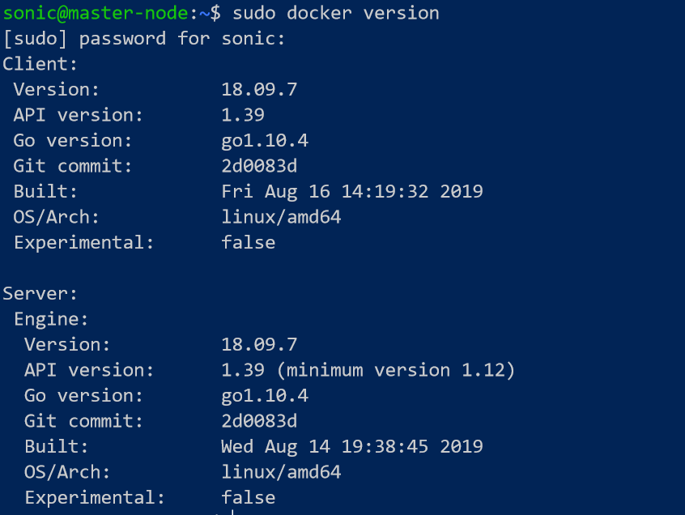
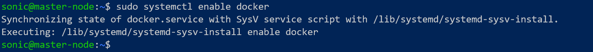
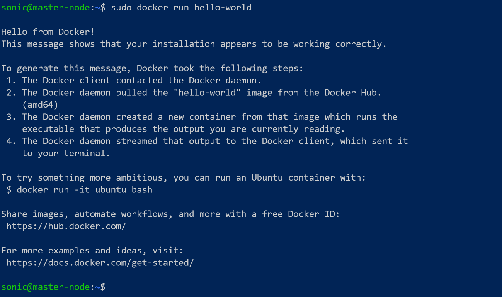
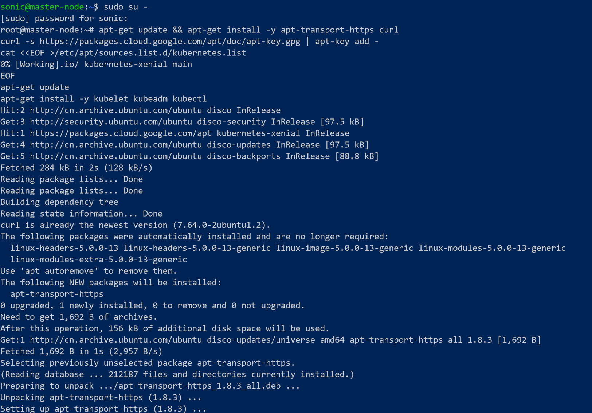
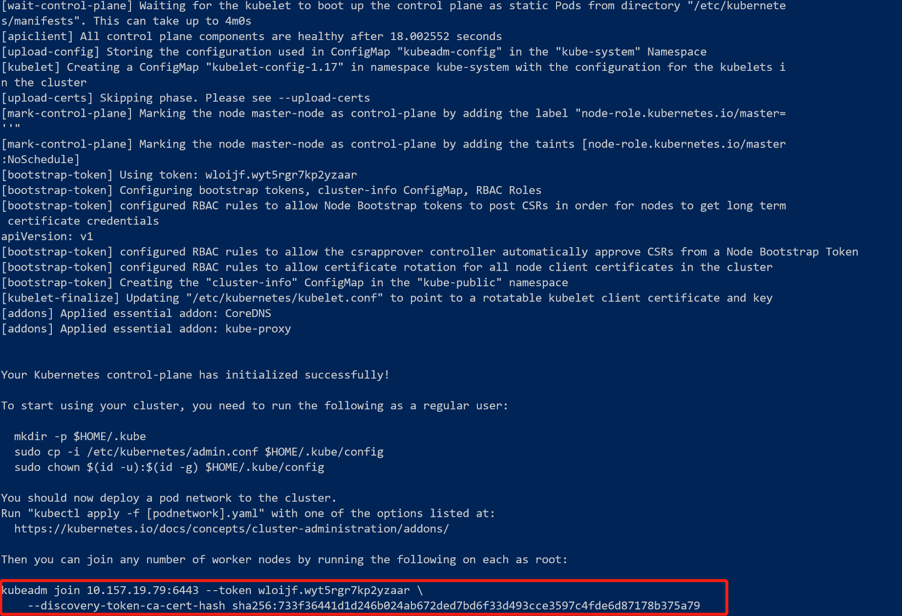
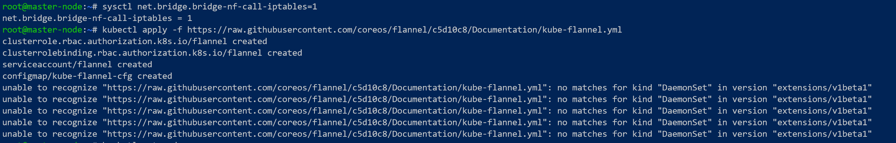
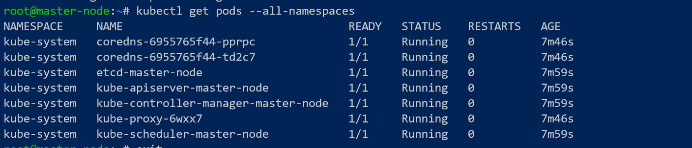
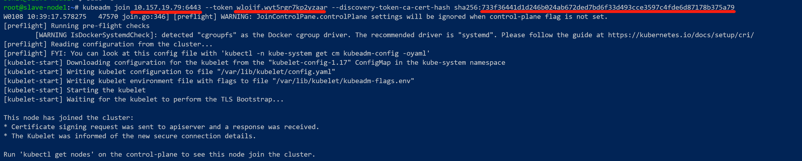
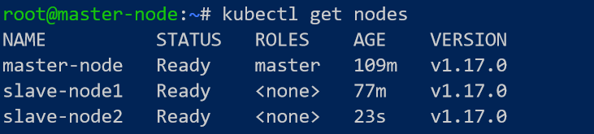

借着微服务这阵风，K8S突然之间就火起来。阿里，微软，AWS，Google等等大厂都在大力支持k8s。学习k8s的最好方法就是自己动手练习。由于手头上没有那么多physical machine, 所以在Windows 10上的hyper-v搭建了3台ubuntu，用来组建k8s的cluster. 这篇文章记录整个搭建的过程，方便查阅。
学习k8s的过程中难免要自己动手做练习，有一套k8s cluster是必须的。我最开始使用的微软的AKS，但是这玩意太贵了。为了省钱，需要自己搭动手一套环境。
配置
HOST的系统配置为：
- Surface Book (16GB)
- Windows 10 (1909)
- Hyper-V
Guest 的配置：
- 3台Ubuntu的VM，分配内存为2GB，50GB硬盘空间，足足的。
- Ubuntu Server 18.04.3 LTS
启用Hyper-V 并且安装ubuntu
Windows 10上的Hyper-V默认是不安装的。Ubuntu的版本方面，我选用了Ubuntu Server 18.04.3 LTS。可以跟着这篇文章启用hyper-V并且安装ubuntu完成ubuntu的安装。我的cluster环境是想配置3台ubuntu。
安装 Docker
完成Ubuntu的安装之后需要安装docker. K8S在运行Pods的时候需要一个container runtime. K8S可以选用多个container runtime:
- Docker
- CRI-O
- Containerd
- Other CRI runtimes: frakti
这里我使用的是Docker. 安装的步骤如下：
1 | sudo apt install apt-transport-https ca-certificates curl software-properties-common |
如果需要给当前用户允许docker的权限，需要执行下面的命令：
1 | sudo usermod -aG docker $USER |
验证一下docker的版本：
1 | sudo docker version |

启用docker utility:
1 | sudo systemctl enable docker |

检测docker是否能够正常运作：
1 | sudo docker run hello-world |

上面的操作在3台Ubuntu上分别完成。
安装 kubeadm, kubectl 和 kubelete
下一步就是要安装k8s最常用的工具kubeadm, kubectl和kubelete.
- kubeadm: the command to bootstrap the cluster.
- kubelet: the component that runs on all of the machines in your cluster and does things like starting pods and containers.
- kubectl: the command line util to talk to your cluster.
为了省事，先切换到root账号。
1 | sudo -s |
然后执行下面的命令：
1 | apt-get update && apt-get install -y apt-transport-https curl |

k8s无法在swap启用的状态下工作，否则会遇到问题。要在3台VM上都关闭swap.
1 | swapoff -a |
修改host name
为了区别master和worker node，可以先修改host name.
在master上配置host name:
1 | sudo hostnamectl set-hostname master-node |
在worker node上配置host name:
1 | sudo hostnamectl set-hostname slave-node |
这个名字是可选的。
Setup master node
接着下一步是配置master node.
1 | kubeadm init --pod-network-cidr=10.244.0.0/16 |
–pod-network-cidr=10.244.0.0/16 这里是flannel必要的配置，因为在kube-flannel.yml中hardcode了。如果要修改这个ip:port的话，需要同时修改这个yml文件。
完成kubeadm init之后，最重要的是记录下下面的信息. 这个输出的命令行是运行在worker node上，可以让worker node加入到cluster时候使用的命令。

为了保证root用户也能使用kubectl:
1 | export KUBECONFIG=/etc/kubernetes/admin.conf |
按照Flannel的要求执行下面的命令：
1 | sysctl net.bridge.bridge-nf-call-iptables=1 |
启用Flannel的pods:
1 | kubectl apply -f https://raw.githubusercontent.com/coreos/flannel/c5d10c8/Documentation/kube-flannel.yml |

检测pods的运行状态。目前为止master配置完成了。
1 | kubectl get pods --all-namespaces |

如果希望运行master node运行worker containers，可以执行下面的命令。不过这样会降低master node的安全性。
1 | kubectl taint nodes --all node-role.kubernetes.io/master- |
最后一步是为非root用户配置k8s admin权限。首先是退出root账号
1 | exit |
然后切换到希望成为k8s admin账号的用户，执行下面的命令：
1 | mkdir -p $HOME/.kube |
到此为止，k8s的master node基本配置完成了。
Setup worker node
worker node同样要安装docker, kubeadm, kubectl, kubelet等。在上面的步骤中已经提到了。另外也要确保swap是关闭的。如果忘记关闭swap就会遇到错误。确保执行下面的命令：
1 | swapoff -a |
执行下面的命令加入到cluster中。
1 | sudo kubeadm join --token <token> <master-ip>:<master-port> --discovery-token-ca-cert-hash sha256:<hash> |
这里的token, 和master-ip等等输入项，都是在安装master node的执行
kubeadm init --pod-network-cidr=10.244.0.0/16时候生成结果。

回到master node执行下面的命令可以检测是否加入成功：
1 | kubectl get nodes |

Recovering
如果中间步骤发生错误，需要重置可以执行下面的命令。这个命令在master node或者worker node都可以分别执行。
1 | kubeadm reset |
参考资料
kubernetes Getting started
installing Kubernetes in a HyperV VM
Install and Deploy Kubernetes on Ubuntu 18.04 LTS
Understanding kubeadm init command for flannel